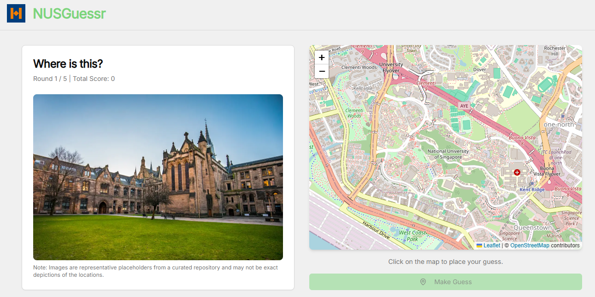
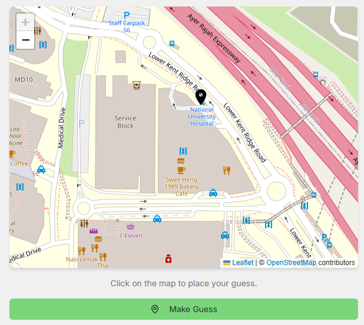
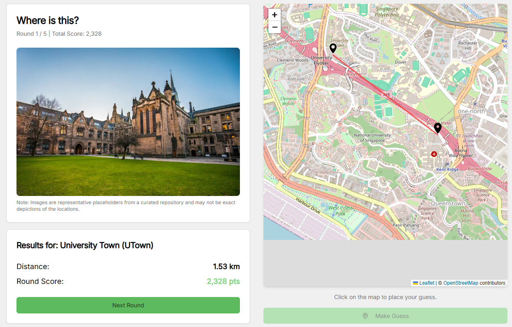
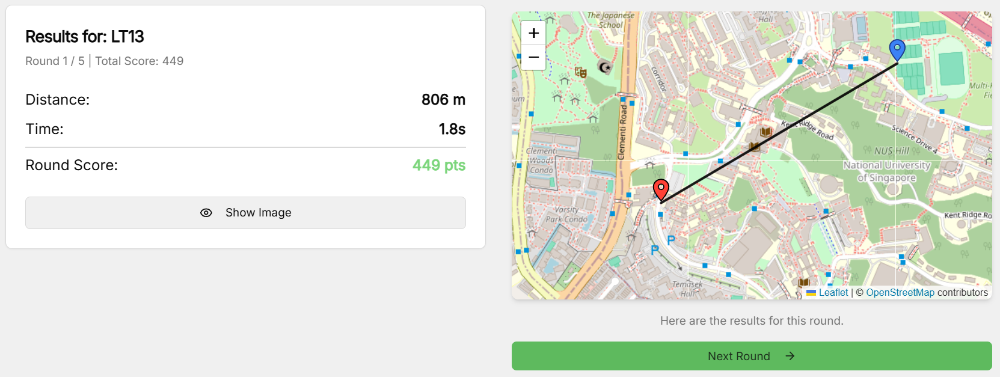
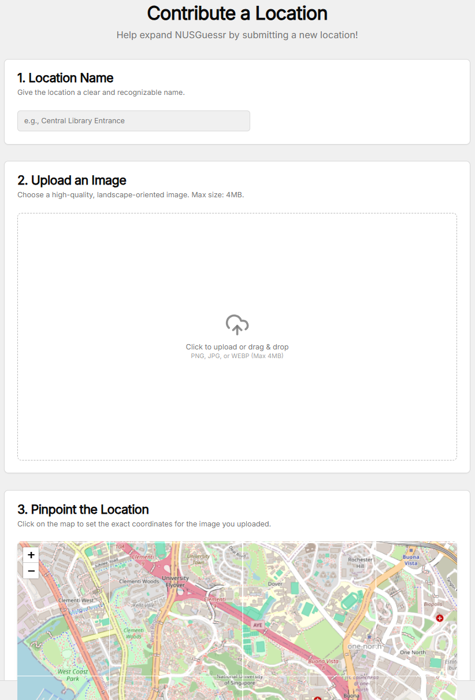
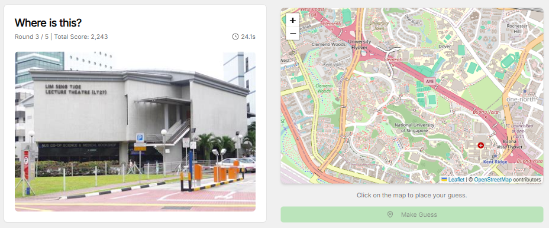

Build a GeoGuessr Clone with Firebase Studio
1 January 2026
Happy new year, everyone!
I'm kicking off the year by sticking to my monthly writing goal in this website. I think it's a good way of documenting the interesting things I encountered during my learning journey, or maybe just the technical side quests I've embarked on.
Prologue: DevFest
Last November, I attended the latest Google Devfest in Singapore and learned about the current development of Firebase Studio and how it can make app development very seamless. Below are some pictures of me attending the conference talks.
The demo was really simple, yet it showed how powerful Firebase Studio is on making web app blueprints. While Firebase Studio might not produce a pixel-perfect final product, it excels at generating the core skeleton.
Coming up with NUSGuessr
On a random weekend, I decided to try Firebase Studio on my own using this one idea I've been thinking about during my final year at NUS: build a webpage like GeoGuessr, but specifically for NUS, meaning the images are either buildings or roads around the NUS campus.
Simple idea, right? I don't need to make it exactly like GeoGuessr, but at least the main concept of the game is there: given an image, be able to pinpoint a location, and then gives you a score based on the distance from the correct location.
This one might be ideally thought out last, but I think is important to address earlier to avoid late-stage headaches: where do we host the app? As someone who is pretty picky on having paid web domains and API keys, I think GitHub Pages should do a pretty good job, which is indeed the webpage you are reading this article at. Other than making a clone of GeoGuessr that's specific for NUS, I also want to be able to host this as a game in my own GitHub page.
Starting Prompts
I fired up a new workspace in Firebase Studio, and then came up with this rather simple prompt. Maybe I'll make a few tweaks along the way, and I'm not a prompt engineer per se, but you might be more interested on the Prototyper AI's first response.
While I didn't specify the tech stack to use, I knew I could've used something I understood like Python, Django, or Flask. But, I went along with what it chose: Typescript, React, Tailwind, CSS, you know the standard modern web stack. I didn't study these stacks specifically back in NUS since I wasn't majoring in computer science and I decided to study other things beyond my module.

And... just like that! It creates the ENTIRE directory structure, commits the change like there's some sort of version control, and then done... or is it?
Well, the first cut had some errors once it is run, but then you can conveniently click "Fix Error" to launch another prompt to fix it.
From here, I realized that GeoGuessr used Google Maps, which requires an API key if you want to use it personally. I decided to move forward with OpenStreetMap since it doesn't require one.
After a few presses of "Fix Error", which I didn't have to figure out why, it's really a working application that I can try in the Firebase preview itself.
The Editor Mode
You don't just type prompts and then try out the preview in Firebase Studio -- you also get to edit the codebase directly and watch the preview changes dynamically! To do this, simply click on the code logo on the top right corner of your page.
Once you do that, it opens a VSCode-like terminal on the same webpage, then you can proceed to prompt and edit concurrently as you go. You can even do CLI as there is a Linux terminal, too.
Knowing that Firebase Studio stores our app using a version control system, we indeed have the liberty to revert our codebase should Prototype gets worse and worse in executing our requirements, i.e. in case anything goes south. Simply head back to the preview mode instead of staying at the code mode, and then you can select which commit you want to revert back into.
Continuous Improvements
Coming up with the initial idea is quick, but one needs to ensure that the entire flow of the app works properly, hence the following sections. Let's see how Prototyper and I work in tandem to produce the final result.
Setting Up Rounds
Normally, I would expect a game to have 5 or 10 questions or so-called rounds, where it picks random locations from your dataset (the RNG or the PRNG used was not of my concern yet). Every round, you will pinpoint a location on the map and then once you confirm your guess, the game will give you a score based on the distance from the correct location, simple as that.
To make testing faster, I set the number of rounds to 5 and the interaction goes like this.
-
You'll be given an image and the map right away, you can zoom around the image to get more details of the image. The map always starts on the same view of NUS (fixed starting zoom level, fixed starting coordinates to display)

-
You pick a location on the map, you can also zoom in and out of the map or pan around it

-
Confirm your guess, and obtain your score! (yes, I eventually changed the pin colours because it's hard to tell the difference)

Landing Page
Initially, once the app starts, you directly go to the first round. Having a landing page would be a crucial feature because people might not want to work on the puzzle right away.
A simple prompt to Prototype would suffice for it to restructure your Typescript files, stating that you also need a confirmation alert when you click on the "Start Game" button.
The Score Function
Just like in GeoGuessr, we want to have a score function that takes in the distance between the guessed location and the actual location, and then gives something between 0 and 5000 points.
Initially, I didn't specify what scoring method to use in my prompts, but it came up with the exponential decay approach.
$$ f(x) = \begin{cases} 5000 & \text{if } x \le 0.04 \\ \left \lfloor 5000e^{-\frac{x}{\delta}}\right \rceil & \text{otherwise} \end{cases} $$
where $x$ is the distance in kilometers (so $x=0.04$ means 40 meters) and $\delta$ is the decay factor, initially set to $\delta=1$. The distance is computed using the Haversine formula, since it's the Earth and its coordinates we're talking about.
While I have accounted for the small-distance case (would be cruel if selecting the opposite room would cost you so many points), there were some issues with this piecewise function.
- You still get quite some number of points when you select a different side of NUS. NUS has an approximately-3km radius, so even selecting something that's 1km away should punish you sufficiently heavily
- The piecewise function isn't continuous, no one will ever get somewhere around 4900 points because it jumps from 5000 to 4800 when $x=0.04$
I simply told Prototyper to fix this issue by readjusting the decay factor and ensuring the piecewise function is continuous. Here's what it ended up with.
$$ f(x) = \begin{cases} 5000 & \text{if } x \le 0.04 \\ \left \lfloor 5000e^{-\frac{x-0.04}{(\delta_1=1)}}\right \rceil & \text{if } x \le 0.08 \\ \left \lfloor f(0.08)e^{-\frac{x-0.08}{(\delta_2=0.5)}}\right \rceil & \text{if } x \le 0.5 \\ \left \lfloor f(0.5)e^{-\frac{x-0.5}{(\delta_3=0.2)}}\right \rceil & \text{otherwise} \\ \end{cases} $$
Essentially, it punishes you even more on longer distances (since the decay factor is smaller) but also ensuring that all scores from 5000 all the way down to 0 are possible to reach.
End-game Copyable
Just like word games you see in New York Times (read: Wordle), you would want to flex your results to your peers after solving their daily puzzle. Usually you'd show off your elapsed time to solve it, or how few mistakes you've made.
Once the 5 rounds conclude, there's supposed to be a pop-up thanking you for playing the game and the score table is displayed as well. Prompting to make a copyable text out of it wasn't too hard, in fact it did the job flawlessly.
For example, the results in the image above would be copied into something like this.
NUSGuessr Practice - Final Score: 24,667
Round 1: Mochtar Riady Building (BIZ1) - 5,000 pts (11.2s)
Round 2: The Deck - 5,000 pts (8.5s)
Round 3: UTown Auditorium 2 - 5,000 pts (4.5s)
Round 4: SDE4 - 4,880 pts (8.8s)
Round 5: The Terrace - 4,787 pts (5.1s)
Play here: https://russelldash332.github.io/NUSGuessr
Favicon and Gradient Header
While the UI wasn't a big issue for me, why not make it a little bit original?
As seen in the initial version, the header was just a randomly-shaped favicon with the green text "NUSGuessr" beside it. So, I decided to use Gemini to create my own favicon, and as for the text, make it a gradient blue-orange. The cherry on top would be the Prototyper being able to animate the gradient smoothly even after button presses using Tailwind, so there's no abrupt restart to the animated gradient.
Daily Challenge
A "practice" round with just 5 questions isn't gonna cut it. How do I compete with the other users? This is where the concept of daily challenge comes!
In the initial practice round, it's just 5 randomized questions that can be restarted when you exit the page or refresh it, and the abrupt restart doesn't matter, because it's just practice. The daily version uses a standardized set of 10 random questions for everyone, but the RNG seed is determined by the clock (what day it is when the user attempted the puzzle).
Furthermore, when someone is in the progress of doing the daily challenge, if for any reason there's a connection issue, or the browser got quit by accident, it should be able to resume the progress. Then, compared to the copypasta you get at the end of a practice game, one shouldn't reveal the locations so others can also try it out without getting spoiled.
Taking into account of these scenarios, the Prototype was fortunately able to handle it by using the local storage to store the current info, but also ensuring that the locations aren't spoiled anywhere within the local storage, network requests, etc.
When you exit the game, notice the difference between doing the same thing in practice mode.
The landing page should be updated accordingly with this new addition. Since you only get to work on the daily challenge once a day, and you might revisit the page multiple times, the daily challenge section should store the information such as when was the last time you did the daily challenge or how long until you can do the upcoming daily challenge. One should also be able to copy today's results again in case one forgot to copy it previously.
The Stopwatch
Despite the elapsed time not being part of the score calculation (yet? should I?), I thought it would be a nice metadata to have in the game and the endgame copypasta. This was also one of the features that took me several tries and rollbacks for the Prototyper to nail the behaviour.
When a round starts, it will load the image and the map, and that's where the stopwatch starts counting. Still the easy part.

The complex part is on the daily challenge: when someone zooms in the image, or quits/exits the page - whether to continue the timer or to stop it, or whether it will keep incrementing the time properly (I recalled one iteration where it exploded to 1000s within a blink of an eye). Explaining this very systematically to Prototyper helps it to understand what to do and what NOT to do.
You can try the app yourself and see which behaviour of the stopwatch I ended up with ;)
Contributing Locations
Credits to the people in Devpost for the idea of this part. While I only found out about this after making the skeleton code, there were many differences in the features, e.g. the map used (OSM vs GMaps). As what they did was for a hackathon which only lasted for a day or two, I didn't know if genAI was involved as well or not.
Of course, there are some locations that I might overlook to share in this app, so having other people to contribute is a great idea, provided there's a manual verification to ensure that this location deserves a spot.
Adding the button on the landing page is easy, and Prototyper came up with some code all the way until the form structure. All I had to do was to set up a link to contain the form submissions.

Prototyper decided to use Formspree to store the submissions, which I can set up further on the Formspree website itself. Having been equipped with spam protection, the next step would be to link this to the app without exposing important credentials.
The issue with this is that I've been doing the project as a static page, so hiding the Formspree URL link from the POST request is not feasible since it requires proxy to do so, but then it's not much of a concern since it's a small-scale app. The security of the data for the images was a higher priority to me.
Note that every prompt can be specified to not change anything on your codebase, so I get to just ask some questions to Prototyper.
Design comes with a cost too, it's not just all the benefits!
UX Testing
This was by far the most time-consuming part, unless you couldn't care less about your app. While I've mentioned some simple examples within each of the previous parts, there were more miscellaneous UX issues that my friend Samuel and I discovered, so I thought making it a separate part would be nice.
Let's start with the first one: the stopwatch. If I'm playing this on a region with poor network, it will take a while to render the image and/or the map completely. The time taken to load and render these should not be counted by the stopwatch, meaning only when BOTH are COMPLETELY rendered, then the stopwatch starts.

Next up, selecting a location on the map. On phone, both the image and the map might not fit into the screen side-by-side, so one will be on top of the other. Since the image is on top, the image will be fully shown but the map only has the top part visible. Regardless, some users will directly click on a location on that visible region without scrolling completely to the map. However, once the user clicks, the blue pinpoint is placed on a completely different spot due to the autoscrolling behaviour that I have not specifically told Prototyper not to enable. A few extra prompts to resolve the issue was sufficient.
Another one is on zooming in the image. Due to the various aspect ratio of the images, it might not fit completely on the image preview, so one might resort to clicking on the image to zoom in. Here's what the zoom-in view looks like.
Can we drag around the image? Am I able to zoom in/out further? What if I drag beyond the edge of the picture? What if I right-click on the image, can I save it or find funny hints on the image? Will the zoom in/out button stay on that one corner if I drag around?
Many questions can come from just one click, and they are all reasonable questions - not too specific, yet important behaviours to consider. One point is to ensure that the image link isn't shown to the user by right clicking or by inspect element. Prototyper managed to handle these details, and now you shouldn't be able to do that while working on a question. The image link is also encoded via base64 so you can't find the source URL of the image anymore (or so I hope), even when you check the network manager on DevTools.
It is worth noting that base64 is an obfuscation/encoding method, not an encryption, so it will be decodeable if one truly wants to try. Encryption methods exist but at a design complexity cost.
Last one worth the mention is the sticky header and footer. I envisioned the app to always show the header with the favicon and the text "NUSGuessr" while the footer always shows my name as the app author. The body moves freely as you scroll around here and there. However, after prompting other features, Prototyper tends to forget this one sticky constraint (no pun intended) and as I scrolled through the content, the header and/or footer gets scrolled away too.
Eventually, I resorted to enforcing strict operational ground rules by stating "the one important ground rule to be adhered every prompt from now on". To ensure this method works, I teased Prototyper by making it recite the ground rule every few prompts, as shown below.
Data Storage and Population
My final homework for the project as of writing this article. Despite the data not being final, the current data is an easier sample of it, so it's ready to be played anyways.
You might be wondering, how does one store the data for the game, or how do we collect the data from your location contributions? This is where JSON comes to the rescue. Since there's not so many locations at the moment, storing the JSON in the codebase as is should be an alright design, as long as this is hidden in the GitHub repository I'm pushing to.
JSON was indeed a simple, if not the simplest, method to store the data. I just need the ID (for easy lookup, perhaps), the location name, the coordinates of the location (latitude and longitude), and last but not least the image URL. A sample entry will look like this (source: the example data).
{
"locations": [
{
"id": "pgp",
"name": "Prince George's Park Residences",
"coordinates": {
"lat": 1.291038,
"lng": 103.780830
},
"imageUrl": "https://www.me.com.sg/resources/ck/images/projects/2002_spaceframe/NUS%20PGP%202.jpg"
},
...
]
}
So, how do we include this in our source code when running the app, hide it in GitHub repository, yet make it run on GitHub pages that runs from that same repository? This is where GitHub Actions come to the rescue.
You can set up a workflow to create the data file just as you deploy the newest version of the app by storing it inside a repository secret. While you can read the exact guide on doing this on the repository's README, it's worth noting that the workflow YAML file is also equally important to complete the process.
How about contributed locations? Same thing, the app packages your submissions into JSON form and then sends it to Formspree as the message. That way, I can simply copy and paste the entry into the big JSON master data if it's good to be included.
Is this method scalable? Well, if it's for NUS with probably at most a few hundred locations, I don't see a problem. However, for larger areas (like let's say random spots in Singapore?), this might not the best approach.
You might wonder why I questioned myself for the previous part...
Main Takeaways
Playing around with Firebase Studio, or genAI in general is like having a less-powerful genie with so many capabilities, yet it needs specific instructions from you to make it work to the fullest. It's still your job as a human to consider the possible niche or complex scenarios that might occur on users, and only then the AI will be able to cater the product to those requirements. Currently, genAIs are pretty excellent on making blueprints or MVPs, but it will be unlikely to be the final version, and thus continuous development involving humans is still a crucial part of the whole process.
Undoubtedly, other edge cases that might happen beyond my testing suite exist, but I hope this is already an extensive "diary" of the app's development.
The App
Why would I not end the article with a shameless promotion?
Head over and play, show yourself how much you know about the NUS surroundings!
For the nerds, you can check the source code here.